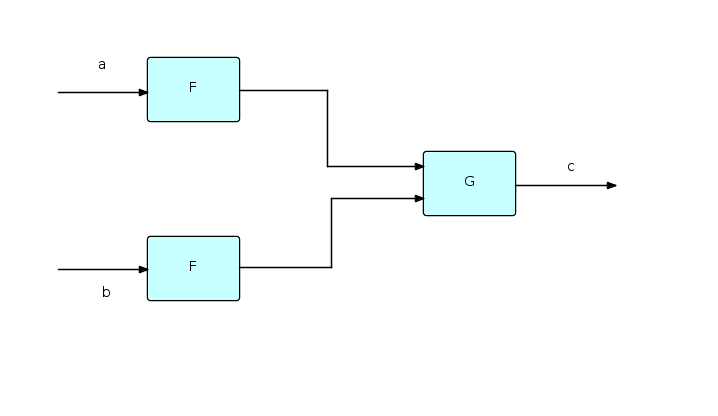

Comparison with other paradigms and methodologies
Jackson Structured Programming (JSP) and Jackson System Development (JSD)
This methodology assumes that a program must be structured as a single procedural hierarchy of subroutines. Its starting point is to describe the application as a set of "main lines", based on the input and output data structures. One of these "main lines" is then chosen to drive the whole program, and the others are required to be "inverted" to turn them into subroutines (hence the name "Jackson inversion"). This sometimes results in what is called a "clash", requiring the program to be split into multiple programs or coroutines. When using FBP, this inversion process is not required, as every FBP component can be considered a separate "main line".
FBP and JSP share the concept of treating a program (or some components) as a parser of an input stream. The FBP book contains a discussion of how the concept of push-down automata may be used to design components (Chapter 23). It describes how a stack of controlling IPs may be used to control nested substreams in an FBP data stream.
In Jackson's later work, Jackson System Development (JSD) the ideas were developed further.
In JSD the design is maintained as a network design until the final implementation stage. The model is then transformed into a set of sequential processes to the number of available processors. Jackson discusses the possibility of directly executing the network model that exists prior to this step, in section 1.3 of his book (italics added):
The specification produced at the end of the System Timing step is, in principle, capable of direct execution. The necessary environment would contain a processor for each process, a device equivalent to an unbounded buffer for each data stream, and some input and output devices where the system is connected to the real world. Such an environment could, of course, be provided by suitable software running on a sufficiently powerful machine. Sometimes, such direct execution of the specification will be possible, and may even be a reasonable choice.
Flow Based Programming can be considered an implementation of the environment described by Jackson, with the exception that connections in FBP are bounded, with a finite capacity, rather than unbounded.
Applicative programming
W.B. Ackerman defines an applicative language as one which does all of its processing by means of operators applied to values. The earliest known applicative language was LISP.
An FBP component can be regarded as a function transforming its input stream(s) into its output stream(s). These functions are then combined to make more complex transformations, as shown here:

If we label streams, as shown, with lower case letters, then the above diagram can be represented succinctly as follows:
c = G(F(a),F(b));
Just as in functional notation F can be used twice because it only works with values, and therefore has no side effects, in FBP two instances of a given component may be running concurrently with each other, and therefore FBP components must not have side-effects either. Functional notation could clearly be used to represent at least a part of an FBP network.
The question then arises whether FBP components can themselves be expressed using functional notation. W.H. Burge showed how stream expressions can be developed using a recursive, applicative style of programming, but this work was in terms of (streams of) atomic values. In FBP, it is necessary to be able to describe and process structured data chunks (FBP IPs). In the FBP book, a notation is added for accessing the fields of an IP, and an operator, called the "mini-constructor" (μ), based on a similar function in the Vienna Definition Language, for creating an IP from a set of (perhaps modified) field values and identifiers.
Furthermore, most applicative systems assume that all the data is available in memory at the same time, whereas FBP applications need to be able to process long-running streams of data while still using finite resources. Friedman and Wise suggested a way to do this by adding the concept of "lazy cons" to Burge's work. This removed the requirement that both of the arguments of "cons" be available at the same instant of time. "Lazy cons" does not actually build a stream until both of its arguments are realized - before that it simply records a "promise" to do this. This allows a stream to be dynamically realized from the front, but with an unrealized back end. The end of the stream stays unrealized until the very end of the process, while the beginning is an ever-lengthening sequence of items.
In the FBP book (Chapter 24), these ideas are combined to allow the expression of some quite complex component logic using applicative notation.
Linda
Many of the concepts in FBP seem to have been discovered independently in different systems over the years. "Linda" (Gelernter and Carriero) is one such. Chapter 26 of the FBP book goes into some detail about similarities and differences, but probably the major difference is that, in Linda, data is accessed associatively, whereas in FBP, IPs arriving at a particular input port are retrieved sequentially. FBP's IPs are very similar to Linda's tuples. The difference between the two techniques is illustrated by the Linda "school of piranhas" load balancing technique - in FBP, this requires an extra "load balancer" component which routes requests to the component in a list which has the smallest number of IPs waiting to be processed. Clearly FBP and Linda are closely related, and one could easily be used to simulate the other.
Object-oriented programming
An object in OOP can be described as a semi-autonomous unit comprising both information and behaviour. Objects communicate by means of "method calls", which are essentially subroutine calls, done indirectly via the class to which the receiving object belongs. The object's internal data can only be accessed by means of method calls, so this is a form of information hiding or "encapsulation". Encapsulation, however, predates OOP - David Parnas wrote one of the seminal articles on it in the early 70s - and is a basic concept in computing. Encapsulation is the very essence of an FBP component, which may be thought of as a black box, performing some conversion of its input data into its output data. In FBP, part of the specification of a component is the data formats and stream structures that it can accept, and those it will generate. This constitutes a form of design by contract. In addition, the data in an IP can only be accessed directly by the currently owning process. Encapsulation can also be implemented at the network level, by having outer processes protect inner ones.
A paper by C. Ellis and S. Gibbs distinguishes between active objects and passive objects. Passive objects comprise information and behaviour, as stated above, but they cannot determine the timing of this behaviour. Active objects on the other hand can do this. In their article Ellis and Gibbs state that active objects have much more potential for the development of maintainable systems than do passive objects. An FBP application can be viewed as a combination of these two types of object, where FBP processes would correspond to active objects, while IPs would correspond to passive objects.
Comparison between FBP and Object-Oriented Programming (Chapter 25 of the 2nd edition) goes into more detail on the relationship between FBP and OOP. This was written around 1994, but still seems valid.